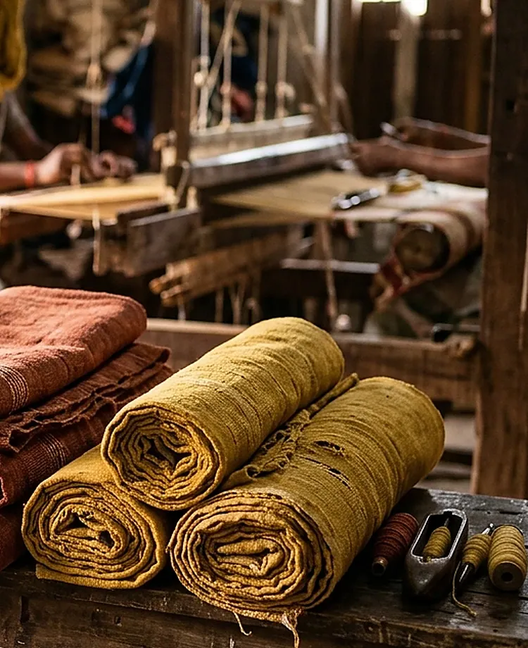
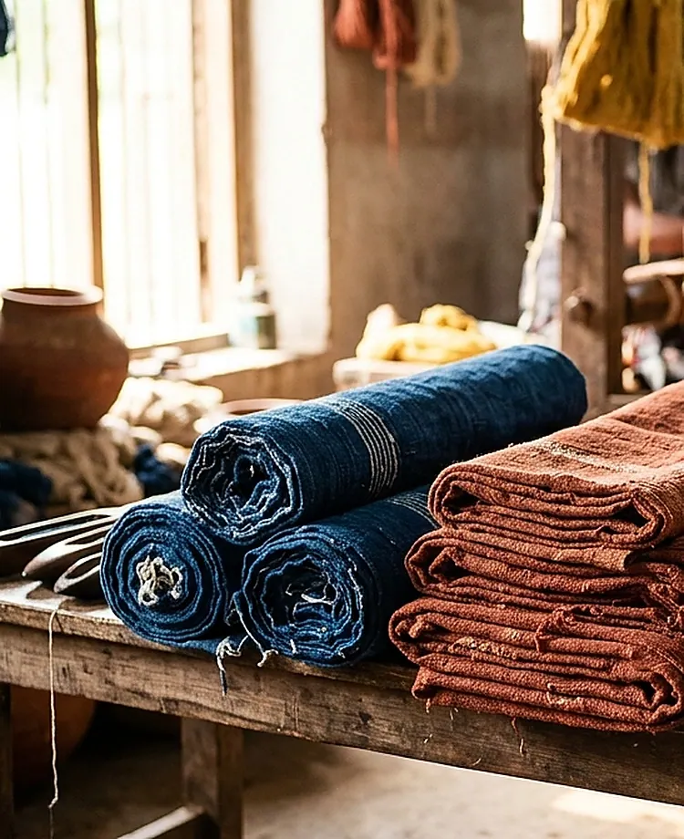
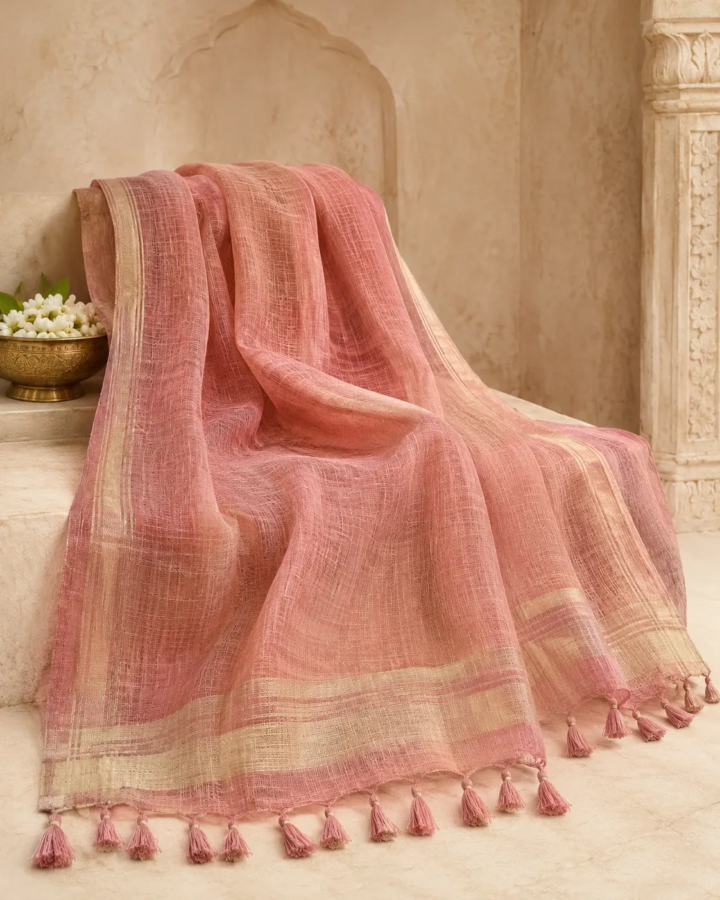
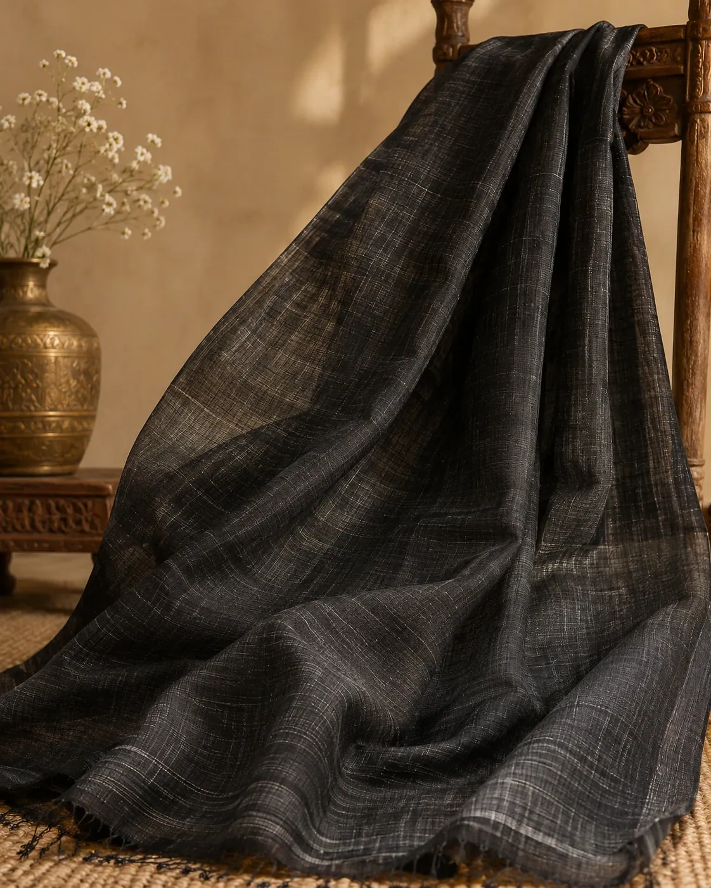
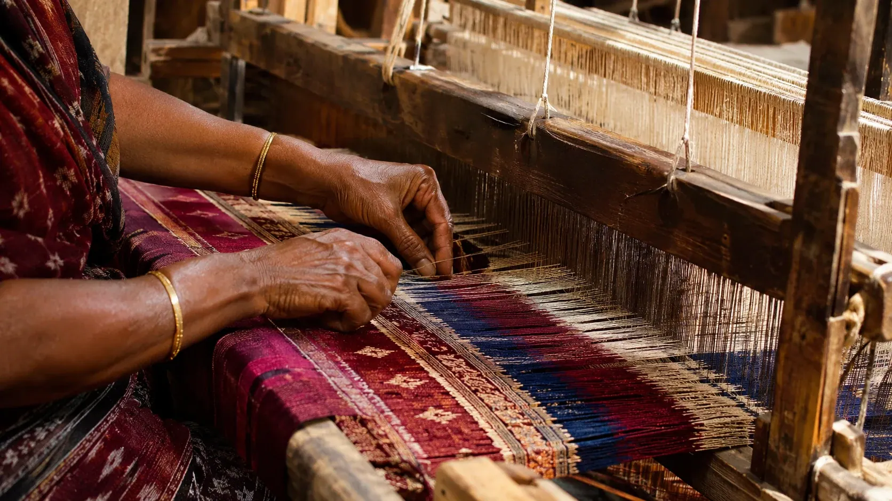

Heritage weaves
Handloom & Khadi studies
Explore thoughtfully selected Khadi and handloom textiles, where material, weaving technique and everyday elegance come together.
Handloom & Khadi studies
Breathable & timeless
Explore weaving practices
Styles for every occasion





A celebration of India’s handloom traditions — where skill, patience and heritage come together to create textiles with a story.
Read MorePreparation begins with the fibre and the yarn. Hand-spinning is specific to traditions such as genuine Khadi; it does not apply to every handloom textile.
Warp threads are arranged and tensioned, while the weft passes across them to create woven cloth and its evolving texture.
Texture, width, drape and care needs depend on yarn, weave, finishing and intended use—ask for specifications before buying.
Illustrative review examples show how fabric guidance, heritage and thoughtful service could feel. Replace these with verified feedback before public launch.
“The fabric notes felt genuinely useful. I knew exactly which cotton would suit daily wear and which weave to reserve for special occasions.”
“I loved the calm way each saree was explained—material, drape, border and care—all in one place without confusion.”
“The collection feels premium but still rooted in craft. It made gifting handloom textiles much easier for our family celebration.”
Learn how to choose fabric by texture, drape, purpose and care—not by colour alone.